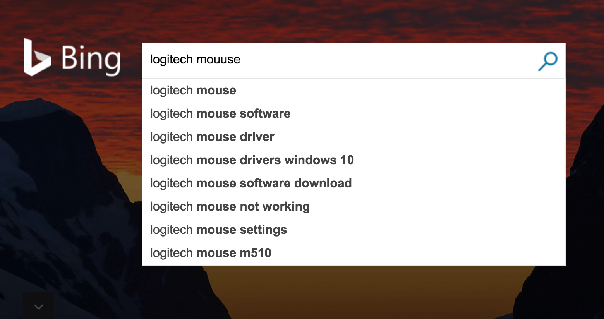
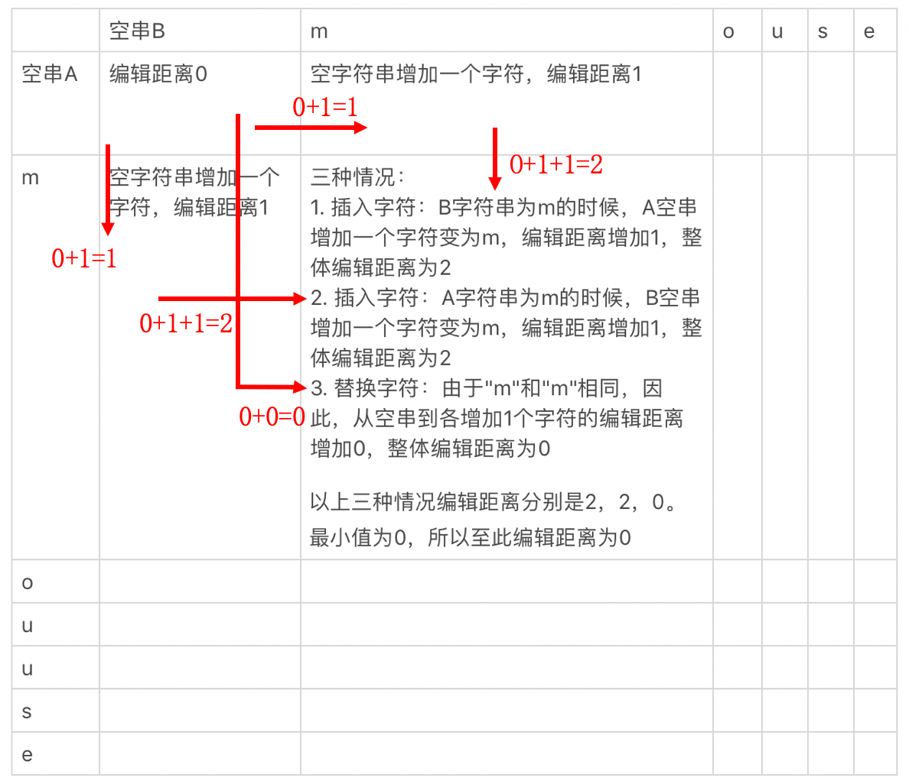

- 01 二进制：不了解计算机的源头，你学什么编程.md.html
- 02 余数：原来取余操作本身就是个哈希函数.md.html
- 03 迭代法：不用编程语言的自带函数，你会如何计算平方根？.md.html
- 04 数学归纳法：如何用数学归纳提升代码的运行效率？.md.html
- 05 递归（上）：泛化数学归纳，如何将复杂问题简单化？.md.html
- 06 递归（下）：分而治之，从归并排序到MapReduce.md.html
- 07 排列：如何让计算机学会“田忌赛马”？.md.html
- 08 组合：如何让计算机安排世界杯的赛程？.md.html
- 09 动态规划（上）：如何实现基于编辑距离的查询推荐？.md.html
- 10 动态规划（下）：如何求得状态转移方程并进行编程实现？.md.html
- 11 树的深度优先搜索（上）：如何才能高效率地查字典？.md.html
- 12 树的深度优先搜索（下）：如何才能高效率地查字典？.md.html
- 13 树的广度优先搜索（上）：人际关系的六度理论是真的吗？.md.html
- 14 树的广度优先搜索（下）：为什么双向广度优先搜索的效率更高？.md.html
- 15 从树到图：如何让计算机学会看地图？.md.html
- 16 时间和空间复杂度（上）：优化性能是否只是“纸上谈兵”？.md.html
- 17 时间和空间复杂度（下）：如何使用六个法则进行复杂度分析？.md.html
- 18 总结课：数据结构、编程语句和基础算法体现了哪些数学思想？.md.html
- 19 概率和统计：编程为什么需要概率和统计？.md.html
- 20 概率基础（上）：一篇文章帮你理解随机变量、概率分布和期望值.md.html
- 21 概率基础（下）：联合概率、条件概率和贝叶斯法则，这些概率公式究竟能做什么？.md.html
- 22 朴素贝叶斯：如何让计算机学会自动分类？.md.html
- 23 文本分类：如何区分特定类型的新闻？.md.html
- 24 语言模型：如何使用链式法则和马尔科夫假设简化概率模型？.md.html
- 25 马尔科夫模型：从PageRank到语音识别，背后是什么模型在支撑？.md.html
- 26 信息熵：如何通过几个问题，测出你对应的武侠人物？.md.html
- 27 决策树：信息增益、增益比率和基尼指数的运用.md.html
- 28 熵、信息增益和卡方：如何寻找关键特征？.md.html
- 29 归一化和标准化：各种特征如何综合才是最合理的？.md.html
- 30 统计意义（上）：如何通过显著性检验，判断你的A_B测试结果是不是巧合？.md.html
- 31 统计意义（下）：如何通过显著性检验，判断你的A_B测试结果是不是巧合？.md.html
- 32 概率统计篇答疑和总结：为什么会有欠拟合和过拟合？.md.html
- 33 线性代数：线性代数到底都讲了些什么？.md.html
- 34 向量空间模型：如何让计算机理解现实事物之间的关系？.md.html
- 35 文本检索：如何让计算机处理自然语言？.md.html
- 36 文本聚类：如何过滤冗余的新闻？.md.html
- 37 矩阵（上）：如何使用矩阵操作进行PageRank计算？.md.html
- 38 矩阵（下）：如何使用矩阵操作进行协同过滤推荐？.md.html
- 39 线性回归（上）：如何使用高斯消元求解线性方程组？.md.html
- 40 线性回归（中）：如何使用最小二乘法进行直线拟合？.md.html
- 41 线性回归（下）：如何使用最小二乘法进行效果验证？.md.html
- 42 PCA主成分分析（上）：如何利用协方差矩阵来降维？.md.html
- 43 PCA主成分分析（下）：为什么要计算协方差矩阵的特征值和特征向量？.md.html
- 44 奇异值分解：如何挖掘潜在的语义关系？.md.html
- 45 线性代数篇答疑和总结：矩阵乘法的几何意义是什么？.md.html
- 46 缓存系统：如何通过哈希表和队列实现高效访问？.md.html
- 47 搜索引擎（上）：如何通过倒排索引和向量空间模型，打造一个简单的搜索引擎？.md.html
- 48 搜索引擎（下）：如何通过查询的分类，让电商平台的搜索结果更相关？.md.html
- 49 推荐系统（上）：如何实现基于相似度的协同过滤？.md.html
- 50 推荐系统（下）：如何通过SVD分析用户和物品的矩阵？.md.html
- 51 综合应用篇答疑和总结：如何进行个性化用户画像的设计？.md.html
- 导读：程序员应该怎么学数学？.md.html
- 开篇词 作为程序员，为什么你应该学好数学？.md.html
- 数学专栏课外加餐（一） 我们为什么需要反码和补码？.md.html
- 数学专栏课外加餐（三）：程序员需要读哪些数学书？.md.html
- 数学专栏课外加餐（二） 位操作的三个应用实例.md.html
- 结束语 从数学到编程，本身就是一个很长的链条.md.html
- 捐赠
09 动态规划（上）：如何实现基于编辑距离的查询推荐？
你好，我是黄申。
上一篇讲组合的时候，我最后提到了有关文本的关键字查询。今天我接着文本搜索的话题，来聊聊查询推荐（Query Suggestion）的实现过程，以及它所使用的数学思想，动态规划（Dynamic Programming）。
那什么是动态规划呢？在递归那一节，我说过，我们可以通过不断分解问题，将复杂的任务简化为最基本的小问题，比如基于递归实现的归并排序、排列和组合等。不过有时候，我们并不用处理所有可能的情况，只要找到满足条件的最优解就行了。在这种情况下，我们需要在各种可能的局部解中，找出那些可能达到最优的局部解，而放弃其他的局部解。这个寻找最优解的过程其实就是动态规划。
动态规划需要通过子问题的最优解，推导出最终问题的最优解，因此这种方法特别注重子问题之间的转移关系。我们通常把这些子问题之间的转移称为状态转移，并把用于刻画这些状态转移的表达式称为状态转移方程。很显然，找到合适的状态转移方程，是动态规划的关键。
因此，这两节我会通过实际的案例，给你详细解释如何使用动态规划法寻找最优解，包括如何分解问题、发现状态转移的规律，以及定义状态转移方程。
编辑距离
当你在搜索引擎的搜索框中输入单词的时候，有没有发现，搜索引擎会返回一系列相关的关键词，方便你直接点击。甚至，当你某个单词输入有误的时候，搜索引擎依旧会返回正确的搜索结果。

搜索下拉提示和关键词纠错，这两个功能其实就是查询推荐。查询推荐的核心思想其实就是，对于用户的输入，查找相似的关键词并进行返回。而测量拉丁文的文本相似度，最常用的指标是编辑距离（Edit Distance）。
我刚才说了，查询推荐的这两个功能是针对输入有缺失或者有错误的字符串，依旧返回相应的结果。那么，将错误的字符串转成正确的，以此来返回查询结果，这个过程究竟是怎么进行的呢？
由一个字符串转成另一个字符串所需的最少编辑操作次数，我们就叫作编辑距离。这个概念是俄罗斯科学家莱文斯坦提出来的，所以我们也把编辑距离称作莱文斯坦距离（Levenshtein distance）。很显然，编辑距离越小，说明这两个字符串越相似，可以互相作为查询推荐。编辑操作有这三种：把一个字符替换成另一个字符；插入一个字符；删除一个字符。
比如，我们想把mouuse转换成mouse，有很多方法可以实现，但是很显然，直接删除一个“u”是最简单的，所以这两者的编辑距离就是1。
状态转移
对于mouse和mouuse的例子，我们肉眼很快就能观察出来，编辑距离是1。但是我们现实的场景中，常常不会这么简单。如果给定任意两个非常复杂的字符串，如何高效地计算出它们之间的编辑距离呢？
我们之前讲过排列和组合。我们先试试用排列的思想来进行编辑操作。比如，把一个字符替换成另一个字符，我们可以想成把A中的一个字符替换成B中的一个字符。假设B中有m个不同的字符，那么替换的时候就有m种可能性。对于插入一个字符，我们可以想成在A中插入来自B的一个字符，同样假设B中有m个不同的字符，那么也有m种可能性。至于删除一个字符，我们可以想成在A中删除任何一个字符，假设A有n个不同的字符，那么有n种可能性。
可是，等到实现的时候，你会发现实际情况比想象中复杂得多。
首先，计算量非常大。我们假设字符串A的长度是n，而B字符串中不同的字符数量是m，那么A所有可能的排列大致在m^n这个数量级，这会导致非常久的处理时间。对于查询推荐等实时性的服务而言，服务器的响应时间太长，用户肯定无法接受。
其次，如果需要在字符串A中加字符，那么加几个呢，加在哪里呢？同样，删除字符也是如此。因此，可能的排列其实远不止m^n。
我们现在回到问题本身，其实编辑距离只需要求最小的操作次数，并不要求列出所有的可能。而且排列过程非常容易出错，还会浪费大量计算资源。看来，排列的方法并不可行。
好，这里再来思考一下，其实我们并不需要排列的所有可能性，而只是关心最优解，也就是最短距离。那么，我们能不能每次都选择出一个到目前为止的最优解，并且只保留这种最优解？如果是这样，我们虽然还是使用迭代或者递归编程来实现，但效率上就可以提升很多。
我们先考虑最简单的情况。假设字符串A和B都是空字符串，那么很明显这个时候编辑距离就是0。如果A增加一个字符a1，B保持不动，编辑距离就增加1。同样，如果B增加一个字符b1，A保持不动，编辑距离增加1。但是，如果A和B有一个字符，那么问题就有点复杂了，我们可以细分为以下几种情况。
我们先来看插入字符的情况。A字符串是a1的时候，B空串增加一个字符变为b1；或者B字符串为b1的时候，A空串增加一个字符变为a1。很明显，这种情况下，编辑距离都要增加1。
我们再来看替换字符的情况。当A和B都是空串的时候，同时增加一个字符。如果要加入的字符a1和b1不相等，表示A和B之间转化的时候需要替换字符，那么编辑距离就是加1；如果a1和b1相等，无需替换，那么编辑距离不变。
最后，我们取上述三种情况中编辑距离的最小值作为当前的编辑距离。注意，这里我们只需要保留这个最小的值，而舍弃其他更大的值。这是为什么呢？因为编辑距离随着字符串的增长，是单调递增的。所以，要求最终的最小值，必须要保证对于每个子串，都取得了最小值。有了这点，之后我们就可以使用迭代的方式，一步步推导下去，直到两个字符串结束比较。
刚才我说的情况中没有删除，这是因为删除就是插入的逆操作。如果我们从完整的字符串A或者B开始，而不是从空串开始，这就是删除操作了。
从上述的过程可以看出，我们确实可以把求编辑距离这个复杂的问题，划分为更多更小的子问题。而且，更为重要的一点是，我们在每一个子问题中，都只需要保留一个最优解。之后的问题求解，只依赖这个最优值。这种求编辑距离的方法就是动态规划，而这些子问题在动态规划中被称为不同的状态。
如果文字描述不是很清楚的话，我这里又画一张表，把各个状态之间的转移都标示清楚，你就一目了然了。
我还是用mouuse和mouse的例子。我把mouuse的字符数组作为表格的行，每一行表示其中一个字母，而mouse的字符数组作为列，每列表示其中一个字母，这样就得到下面这个表格。

这张表格里的不同状态之间的转移，就是状态转移。其中红色部分表示字符串演变（或者说状态转移）的方式以及相应的编辑距离计算。对于表格中其他空白的部分，我暂时不给出，你可以试着自己来推导。
编辑距离是具有对称性的，也就是说从字符串A到B的编辑距离，和从字符串B到A的编辑距离，两者一定是相等的。这个应该很好理解。
你可以把刚才那个状态转移表的行和列互换一下，再推导一下，看看得出的编辑距离是否还是1。我现在从理论上解释下这一点。这其实是由编辑距离的三种操作决定的。比如说，从字符串A演变到B的每一种操作，都可以转换为从字符串B演变到A的某一种操作。
所以说，从字符串A演变到B的每一种变化方式，都可以找到对应的从字符串B演变到A的某种方式，两者的操作次数一样。自然，代表最小操作次数的编辑距离也就一样了。
小结
我今天介绍了用于查询推荐的编辑距离。编辑距离的定义很好理解，不过，求任意两个字符串之间的编辑距离可不是一件容易的事情。我先尝试用排列来分析问题，发现这条路走不通，而后我们仍然使用了化繁为简的思路，把编辑距离的计算拆分为3种情况，并建立了子串之间的联系。
你不要觉得这样的分析过程比较繁琐，我想说的是，学数学固然是为了得到结果，但是学习的过程，是要学会解决问题的方法和思路。比如面对一个问题的时候，你可能不知道用什么方法来解决，但是你可以尝试用我们学过的这些基础思想去分析，去比对，在这个分析的过程中去总结这些方法的使用规律，久而久之，你就能摸索出自己解决问题的套路。
比如说，动态规划虽然也采用了把问题逐步简化的思想，但是它和基于递归的归并排序、排列组合等解法有所不同。能够使用动态规划解决的问题，通常只关心一个最优解，而这个最优解是单调改变的，例如最大值、最小值等等。因此，动态规划中的每种状态，通常只保留一个当前的最优解，这也是动态规划效率比较高的原因。
思考题
理解了动态规划法和状态转移之后，你觉得根据编辑距离来衡量字符串之间的相似程度有什么局限性？你有什么优化方案吗？
欢迎在留言区交作业，并写下你今天的学习笔记。你可以点击“请朋友读”，把今天的内容分享给你的好友，和他一起精进。
© 2019 - 2023 Liangliang Lee. Powered by gin and hexo-theme-book.